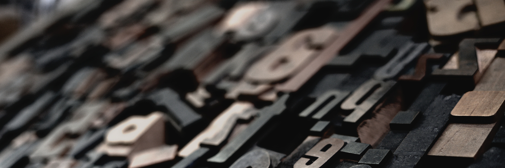

Another New Design

It’s a new design, yes it is! This site gets more visual updates than it does blog posts but that’s where we’re at currently. What follows is a brief write up about the decisions that went into reworking the design of this site and what is to come.
The previous template for the site used an altered version of a template that I liked but was never quite happy with. This new version takes a similar approach but is way easier to setup and make adjustments. The other piece to consider is that I never really felt comfortable with leading with a blog as I’m not great about keeping up with it obviously.
There are a few things about this template and the adjustments I’ve made that I’m happy with. For instance there is significantly less visual clutter on any and every page involved. As I mentioned above I don’t want to lead with a blog so now there is an introductory header element that has my face and a tag line introduction. This is preferable to jumping right into a blog for me. My preference is for dark mode reading so the site reflects that. There is some additional adjustment required to get it where it needs to be but I’m happy with it for now. Additionally I’ve added some brand colors that were lacking in the previous site which was all grey.
My next approach is to optimize and make it more accessible. I’ve ran lighthouse on it and the plan is to make as many of the suggested changes as possible. One main problem that I agree with and want to correct first is the level of contrast. Some of the colors I’ve chosen and even the standard text are not easy enough to read. I like the way it looks currently but I do hope I’m not the only one that ever looks at the site.
I would like to follow some tutorials and add comments to my posts. While I don’t suppose I’ll get much in the way of interaction the project to add them using ActivityPub via Mastodon seems interesting.
Next projects will be documented and shared here. I’m not a web developer but I do like to poke around with this sort of thing so I’ll be recording that information in a blog in 2023 and beyond. Imagine that!
The image above is from Photo by Raphael Schaller on Unsplash.